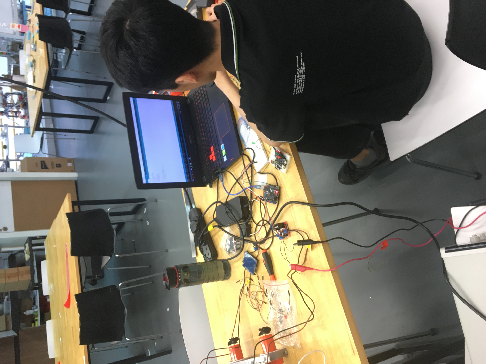
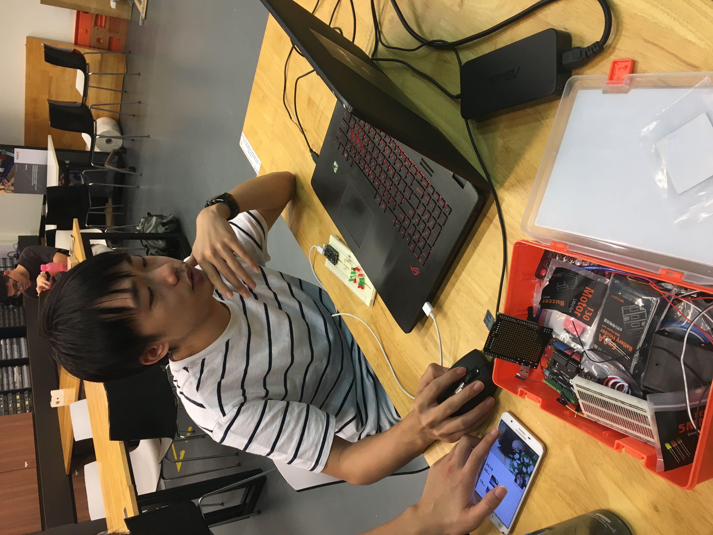
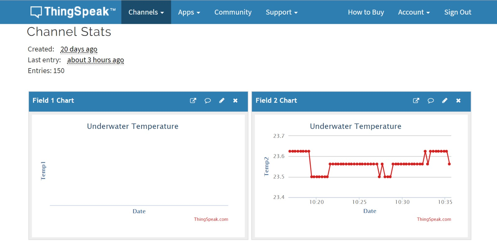

Programming
Motor and servo control using remote and IR sensor with Arduino
#include
#include
const int RECV_PIN = 7;
IRrecv irrecv(RECV_PIN);
decode_results results;
Servo foodServo;
Servo hookServo;
int state = 5;
bool unleashed = false;
int decode(long hex);
void setup(){
Serial.begin(9600);
irrecv.enableIRIn();
irrecv.blink13(true);
pinMode(10, OUTPUT);
pinMode(11, OUTPUT);
pinMode(5, OUTPUT);
pinMode(6, OUTPUT);
hookServo.attach(2);
hookServo.write(180);
foodServo.attach(12);
foodServo.write(90); }
void loop(){
if (irrecv.decode(&results)){
Serial.println(results.value);
if(decode(results.value) != 0){
state = decode(results.value);
}
irrecv.resume();
}
if(state == 5){
digitalWrite(10, LOW);
digitalWrite(11, LOW);
digitalWrite(5, LOW);
digitalWrite(6, LOW);
} else if(state == 1){
digitalWrite(10, LOW);
digitalWrite(11, LOW);
digitalWrite(5, LOW);
digitalWrite(6, LOW);
delay(1000);
foodServo.write(180);
delay(1700);
foodServo.write(90);
state = 5;
} else if(state == 3){
digitalWrite(10, LOW);
digitalWrite(11, LOW);
digitalWrite(5, LOW);
digitalWrite(6, LOW);
delay(1000);
if(!unleashed){
hookServo.write(0);
unleashed = true;
delay(500);
} else {
hookServo.write(180);
unleashed = false;
delay(500);
}
state = 5;
} else if(state == 2){
digitalWrite(10, LOW);
digitalWrite(11, HIGH);
digitalWrite(5, LOW);
digitalWrite(6, HIGH);
} else if(state == 6){
digitalWrite(10, LOW);
digitalWrite(11, HIGH);
digitalWrite(5, HIGH);
digitalWrite(6, LOW);
} else if(state == 4){
digitalWrite(10, HIGH);
digitalWrite(11, LOW);
digitalWrite(5, LOW);
digitalWrite(6, HIGH);
} else if(state == 8){
digitalWrite(11, LOW);
digitalWrite(10, HIGH);
digitalWrite(6, LOW);
digitalWrite(5, HIGH);
}
delay(50);
}
int decode(long hex){
switch(hex){
case 16582903:
return 1;
case 16615543:
return 2;
case 16599223:
return 3;
case 16591063:
return 4;
case 16623703:
return 5;
case 16607383:
return 6;
case 16619623:
return 8;
default:
return 0;
}
}
Credits to Tan Yuan Pin P1731895 from Group Charlie
Temperature data with esp32
#include
#include
#include
#include "ThingSpeak.h"
#include "secrets.h"
#include
int databus=5;
OneWire oneWire(databus);
DallasTemperature sensors(&oneWire);
float Celcius=0;
char ssid[] = SECRET_SSID; // your network SSID (name)
char pass[] = SECRET_PASS; // your network password
int keyIndex = 0; // your network key Index number (needed only for WEP)
WiFiClient client;
unsigned long myChannelNumber = SECRET_CH_ID;
const char * myWriteAPIKey = SECRET_WRITE_APIKEY;
void setup() {
Serial.begin(115200); //Initialize serial
sensors.begin();
WiFi.mode(WIFI_STA);
ThingSpeak.begin(client); // Initialize ThingSpeak
}
void loop() {
// Connect or reconnect to WiFi
if(WiFi.status() != WL_CONNECTED){
Serial.print("Attempting to connect to SSID: ");
Serial.println(SECRET_SSID);
while(WiFi.status() != WL_CONNECTED){
WiFi.begin(ssid, pass); // Connect to WPA/WPA2 network. Change this line if using open or WEP network
Serial.print(".");
delay(5000);
}
Serial.println("\nConnected.");
}
// Write to ThingSpeak. There are up to 8 fields in a channel, allowing you to store up to 8 different
// pieces of information in a channel. Here, we write to field 1.
sensors.requestTemperatures();
Celcius=sensors.getTempCByIndex(0);
delay(500);
while(Celcius<=0){
sensors.requestTemperatures();
Celcius=sensors.getTempCByIndex(0);
delay(500);
}
Serial.print(" C ");
Serial.println(Celcius);
int x = ThingSpeak.writeField(myChannelNumber,2,Celcius, myWriteAPIKey);
if(x == 200){
Serial.println("Channel update successful.");
}
else{
Serial.println("Problem updating channel. HTTP error code " + String(x));
}
delay(15000); // Wait 20 seconds to update the channel again
}
 Done by Chang Chieh Grp Delta